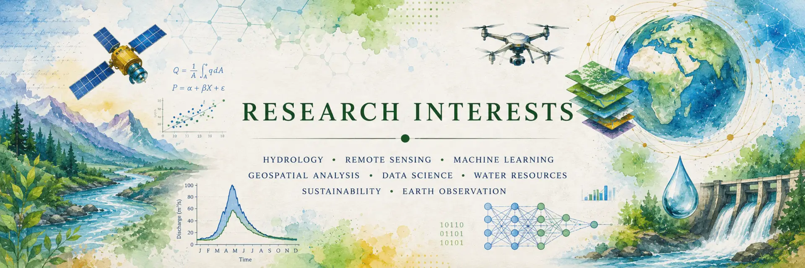

My research lies at the intersection of computational hydrology, water resources engineering, geospatial analytics, and environmental change science. I am particularly interested in understanding how climatic variability, land-use change, and anthropogenic interventions alter catchment-scale hydrological processes and water availability. During my doctoral research, I developed methodologies for assessing catchment vulnerability to environmental change, with a focus on quantifying the sensitivity and resilience of river basins under changing hydro-climatic conditions. This work strengthened my interest in data-driven hydrological analysis and large-scale environmental assessment....
Peer Reviewed Articles Deshmukh, A., and Singh, R. (2019). A Whittaker‐Biome based framework to account for the impact of climate change on catchment behavior. Water Resources Research, In Press, doi: 10.1029/2018WR023113 Deshmukh, A., and Singh, R. (2016). Physio-climatic controls on vulnerability of watersheds to climate and land use change across the United States. Water Resources Research, doi: 10.1002/2016WR019189 Book Chapter Singh, R., Veena, S., and Deshmukh, A., 2017. Assessing the vulnerability of water avialabilty across India to climate change and interlinking of rivers....
Brief summaries of my recent research — click any card to read the full story. 01 June 2026 Physio-climatic controls on vulnerability of watersheds Combine exploratory modeling and comparative hydrology. Define vulnerability useful under large uncertainties. Estimate vulnerability of 69 US watersheds. 02 June 2026 Whittaker-Biome framework for climate change impact Compare fixed vs. changing model parameters. Changing parameters significantly alter estimates. Covers a majority of catchments. 03 June 2026 Catchment classification & hydrologic response Develop a standardised classification framework....